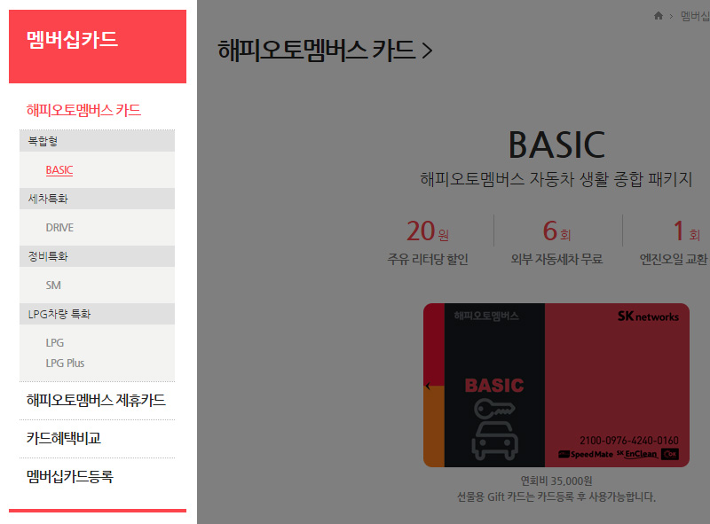

1 > 2 dep 구조의 세로 메뉴를 아코디언 모션으로 구현 시 slideUp 과 slidedown 으로 메뉴 모션을 넣을 경우 2dep 의 ul 을 display:inline-block 로 설정하면 열고 닫을 때 튀는 현상이 발생함.
이건 아마도 스크립트 상에서 2dep 의 높이값을 산출하는데 inline-block 일 경우 그 값이 불안정 해서 발생하는 걸로 추측 (아니면 inline-block 의 가변성 때문인지도)
위 부분은 ul 태그를 display:block 로 설정해주면 깔끔하게 해결 됨!